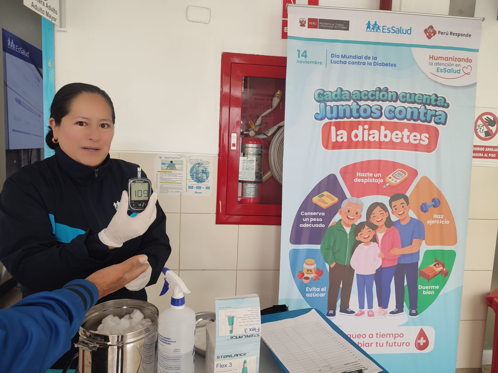
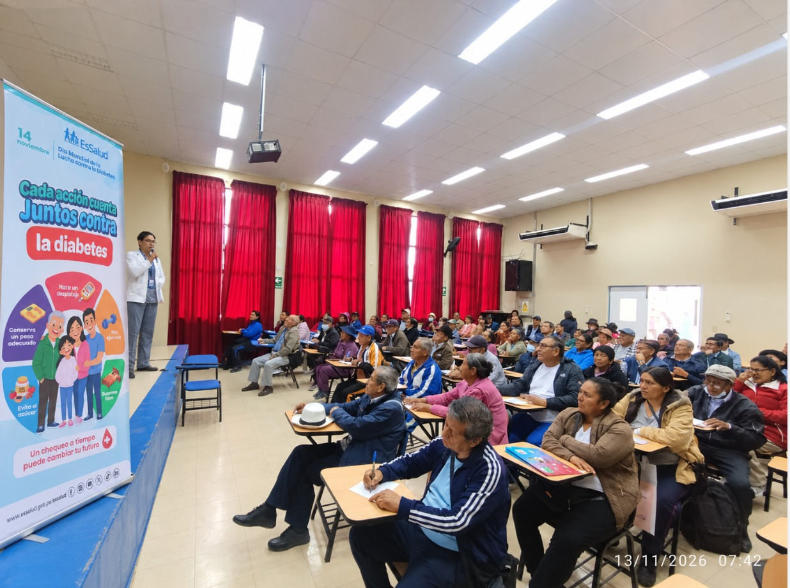

Una pequeña herida en el pie puede complicarse en personas con diabetes. Aprende hábitos diarios de autocuidado, señales de alerta y cuándo acudir al establecimiento de salud.

Fuente: EsSalud Ayacucho.
Para una persona con diabetes, una pequeña herida en el pie puede convertirse en un problema serio si no se detecta a tiempo. La pérdida de sensibilidad y la dificultad para la cicatrización hacen que ampollas, cortes o rozaduras pasen inadvertidos y puedan complicarse. Por eso, el autocuidado diario de los pies es una parte esencial del manejo de la diabetes.
Especialistas de EsSalud Ayacucho recuerdan que revisar los pies, mantener una buena higiene y usar calzado adecuado son medidas simples que ayudan a prevenir infecciones y complicaciones mayores. La prevención empieza en casa, todos los días.
Incorporar estos hábitos en tu día a día puede reducir el riesgo de lesiones:

La revisión diaria y los controles periódicos ayudan a prevenir el pie diabético.
No esperes a que una lesión duela para buscar atención. Acude al establecimiento de salud si notas:
Las personas con diabetes también deben controlar sus niveles de glucosa y presión arterial, evitar la automedicación y cumplir sus controles médicos. El cuidado de los riñones y una alimentación equilibrada, según indicación profesional, forman parte del mismo cuidado integral.
La educación en autocuidado ayuda a prevenir complicaciones y preservar la calidad de vida.
El manejo de la diabetes va más allá de los medicamentos. Cuidar los pies, mantener hábitos saludables y acudir a controles periódicos son acciones que protegen la calidad de vida. Si tienes diabetes o cuidas a alguien que la tiene, convierte la revisión de los pies en un hábito diario: unos minutos pueden evitar complicaciones graves.